Fixtures are just the visible part. Behind them, I build and run the entire in-store program, from the first sketch to the store floor, across APAC markets.집기는 보이는 일부일 뿐입니다. 첫 스케치부터 매장 현장까지, APAC 전역에서 매장 프로그램 전체를 만들고 운영합니다.
Five areas, one in-store program.다섯 영역, 하나의 매장 프로그램.
The mix shifts by market and by moment. What stays the same is one plan, clear ownership, and results the client can see.시장과 시기에 따라 조합은 달라집니다. 변하지 않는 것은 하나의 계획, 분명한 오너십, 그리고 클라이언트가 직접 확인할 수 있는 결과입니다.
Results you can actually point at, across APAC markets.실제로 가리킬 수 있는 결과물. APAC 시장 곳곳에서.
Secured a hero zone at the Lotte Hi-Mart Jamsil Megastore through relationships alone, then anchored it with compatible partner devices so every brand in the space gained. That value exchange replaced rent. I led the space, fixture build, and install from first sketch to opening day.롯데 하이마트 잠실 메가스토어의 히어로 존을 관계만으로 확보했습니다. 호환 파트너 기기들을 한 공간에 모아 모든 브랜드가 이득을 보는 구조를 만들었고, 그 가치가 임대료를 대신했습니다. 공간 기획부터 집기 제작, 설치, 오픈까지 직접 이끌었습니다.
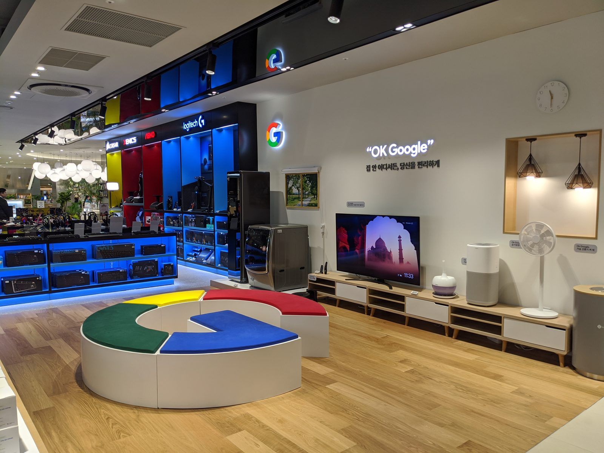
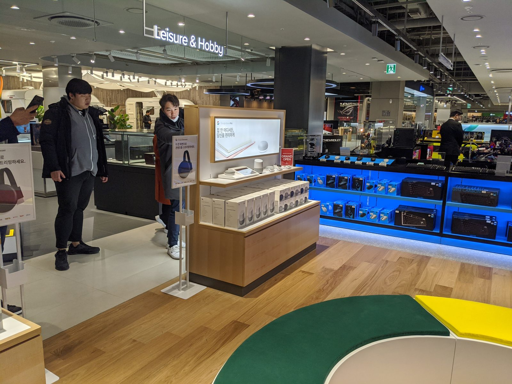
From train-the-trainer programs and region-by-region technician roadshows to a partner in-house broadcast and a YouTube creator collaboration, I design training in whatever format the floor needs, deliver it personally, and localize the framework across markets.TTT(강사 양성) 프로그램과 지역 단위 기사 교육 로드쇼부터 파트너 사내 방송 출연, 유튜브 크리에이터 협업까지. 현장에 필요한 형식이라면 무엇이든 직접 설계하고 진행하며, 같은 프레임워크를 시장마다 현지화합니다.
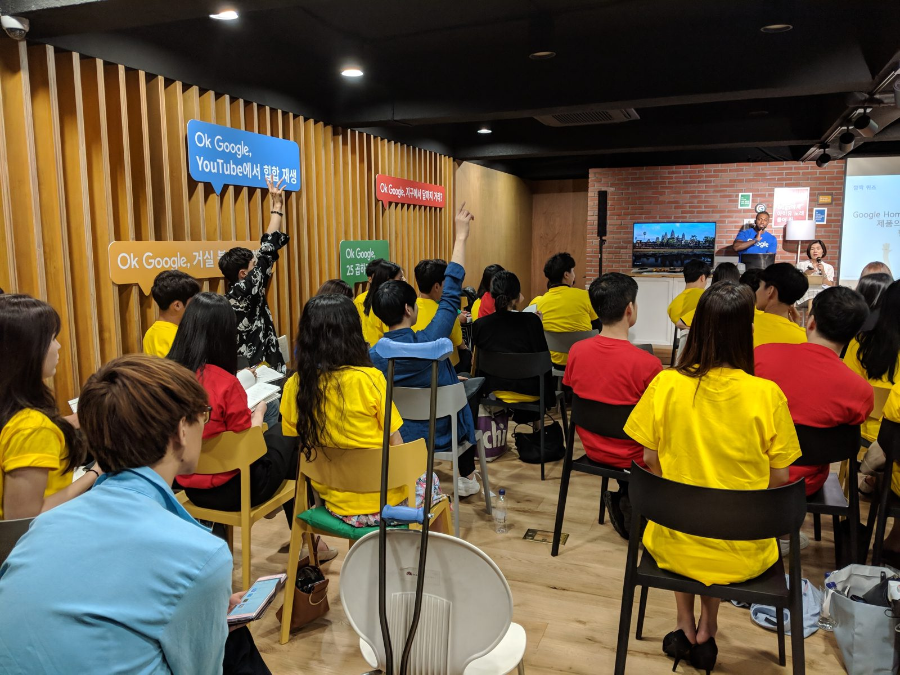
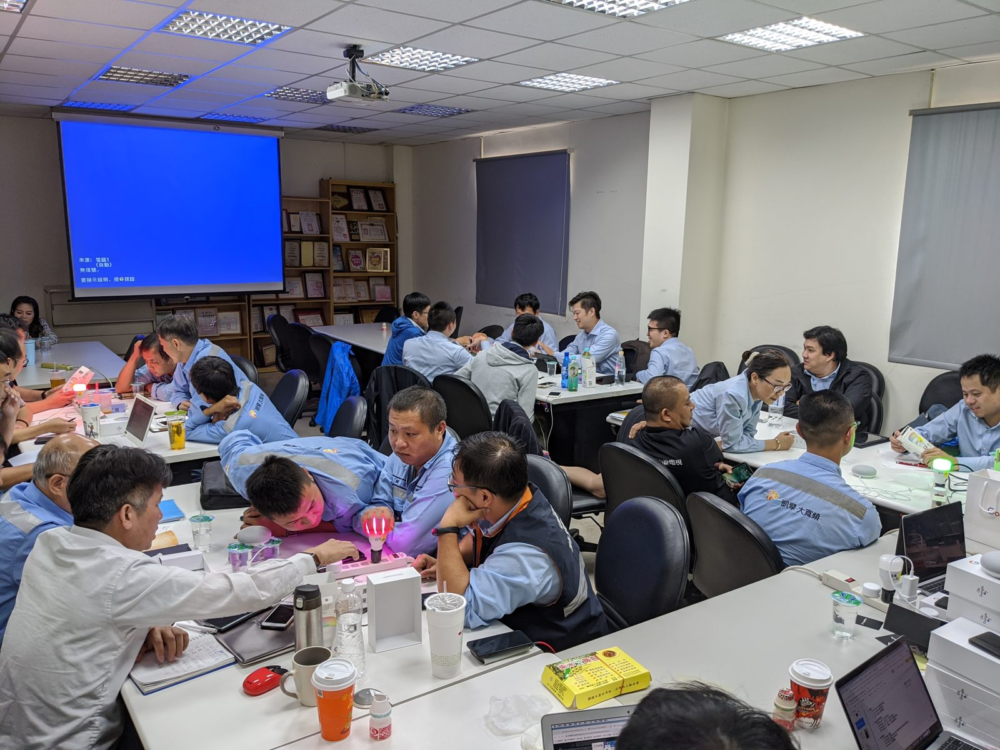
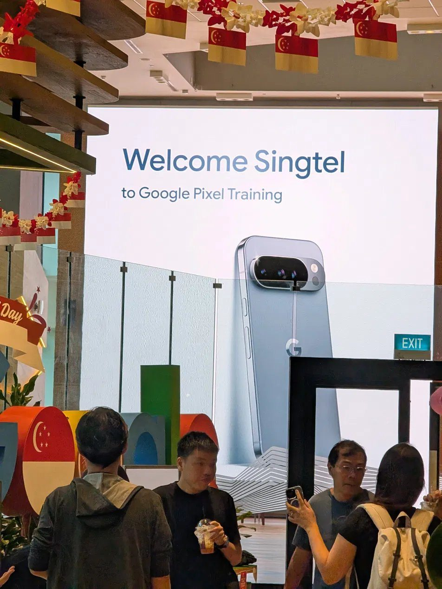
For the Pixel 4 launch in Taiwan, we removed the claw machine’s joystick and made Motion Sense, the launch’s hero feature, the only way to play. I oversaw the build on a tight deadline. A feature people had only read about became an experience they lined up for.대만 픽셀 4 런칭에서 인형뽑기 기계의 조이스틱을 떼고, 런칭의 핵심 기능인 모션 센스를 컨트롤러로 만들었습니다. 빠듯한 마감 속에 제작을 직접 감독했고, 글로만 읽던 기능이 줄 서서 즐기는 체험이 되었습니다.
Built the field and retail foundation for Google’s first Pixel launch in India, recruiting, onboarding, and training the on-floor force across major cities in four months on the ground.구글의 인도 첫 픽셀 출시를 위한 필드·리테일 기반을 세웠습니다. 4개월간 현장에 머물며 주요 도시의 현장 인력을 채용하고 교육했습니다.
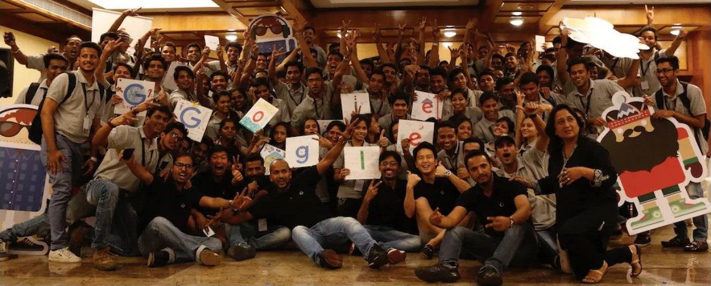
Every fixture follows the same disciplined path. Nothing left to chance.모든 집기는 같은 규율의 흐름을 따릅니다. 우연에 맡기지 않습니다.
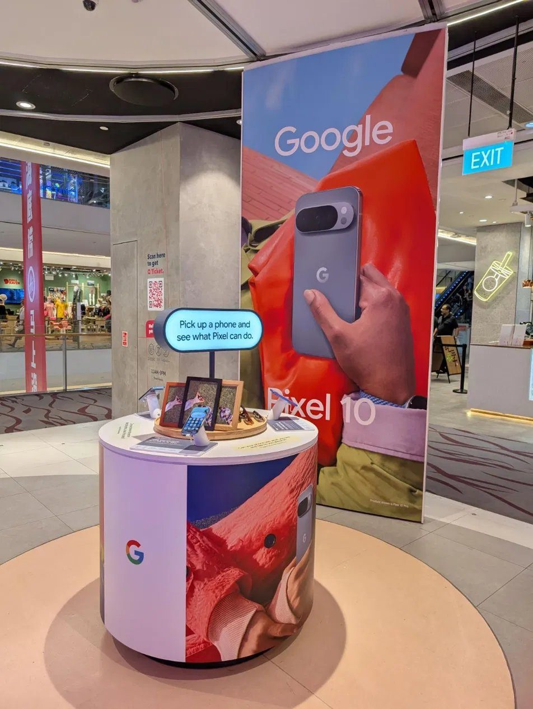
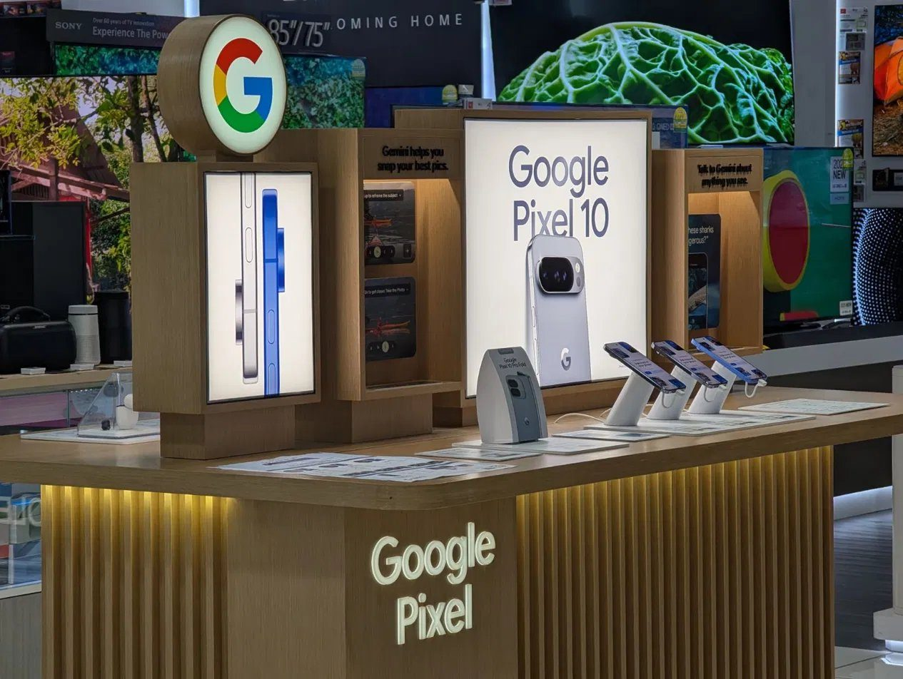
Not only design. The full in-store program, market by market.디자인만이 아닙니다. 매장 프로그램 전체를, 시장마다.
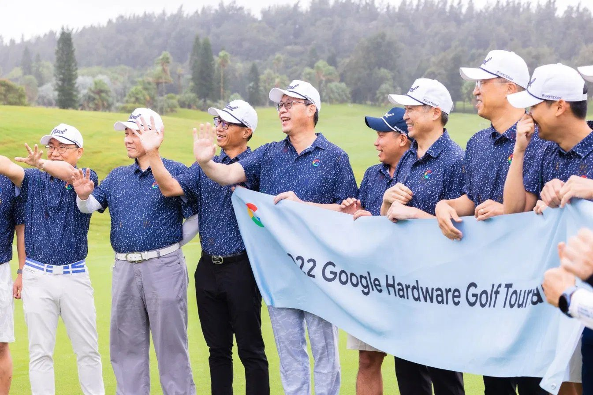
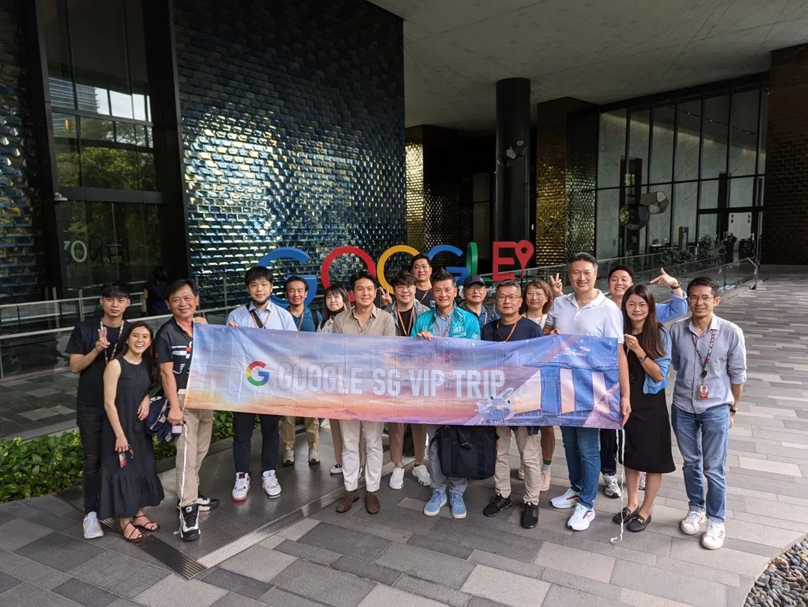
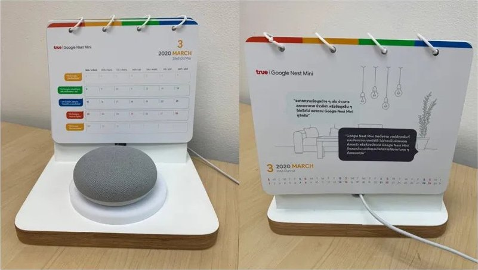
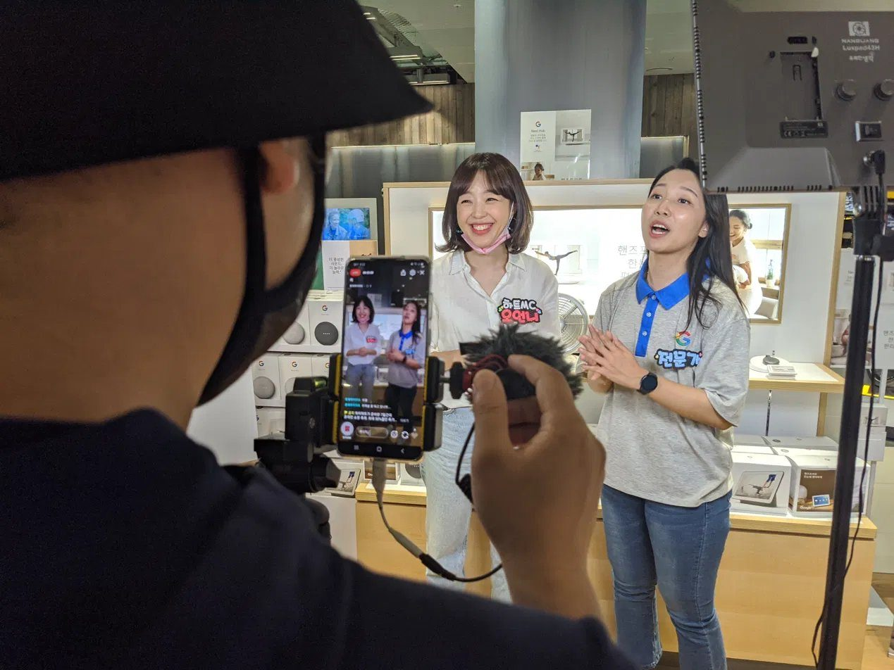
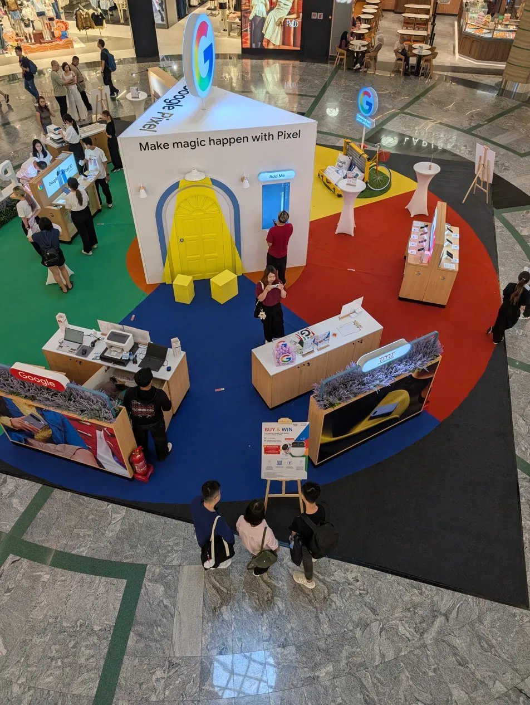